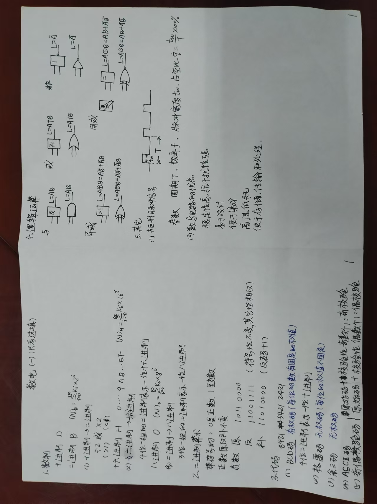
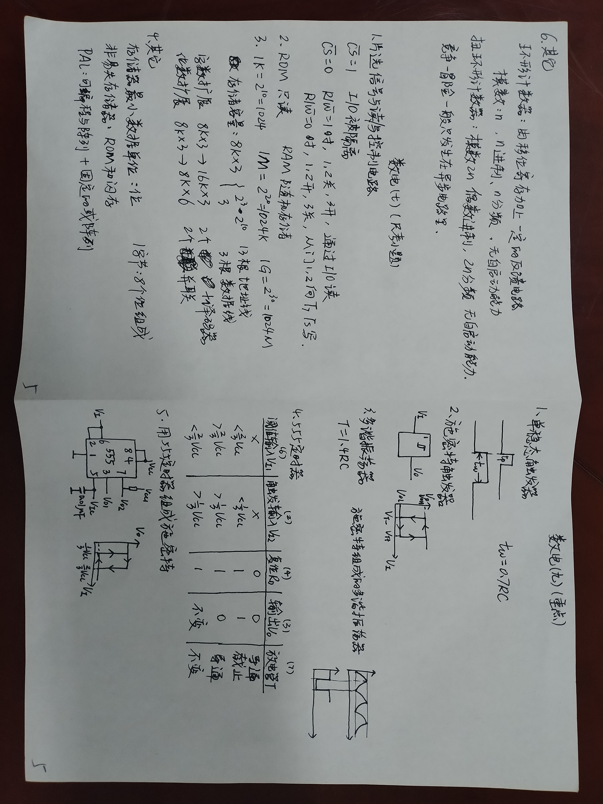
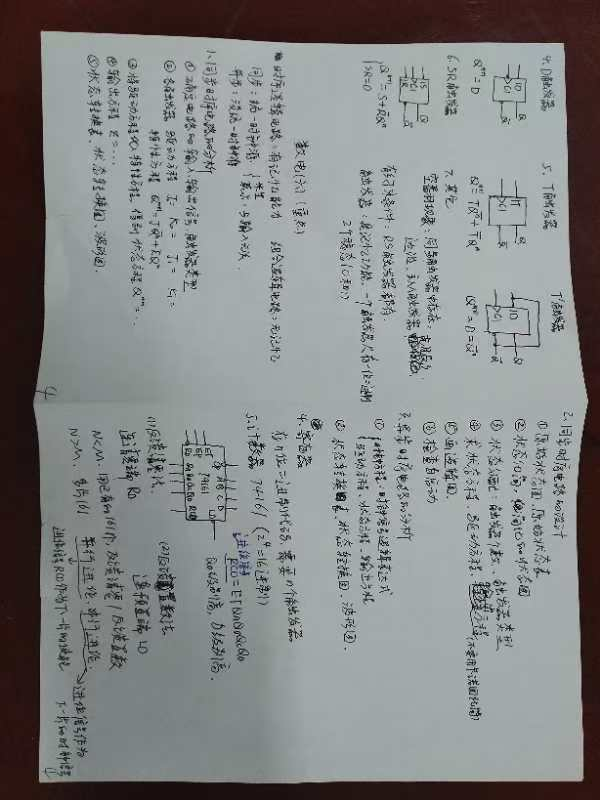
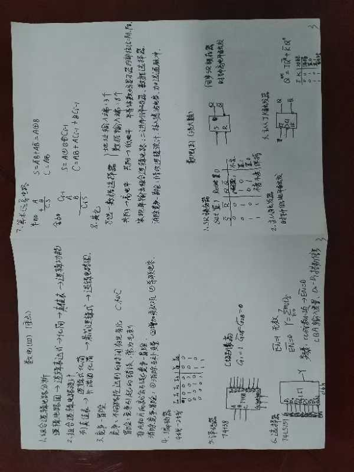
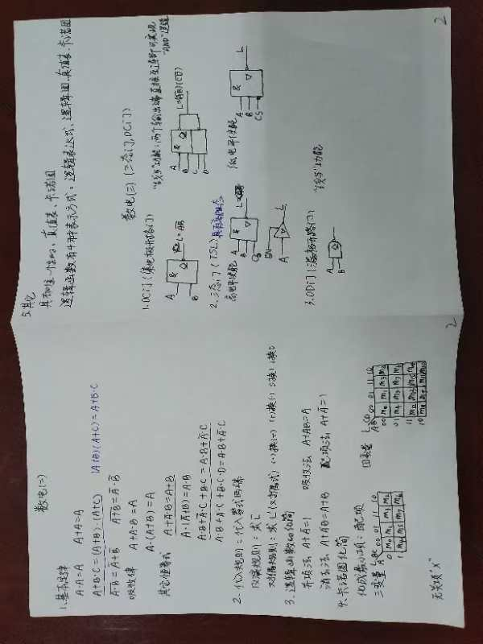

课程简介
数字电子技术是研究数字电路分析与设计的基础课程。主要学习数字逻辑基础、组合逻辑电路、时序逻辑电路、存储器、数模转换等内容。本页面包含数字电子技术的概念题集，用于巩固和复习知识点。
笔记下载
第9章 数-模和模-数转换
一、判断题
- 若分辨率用D/A转换器的最小输出电压与最大输出电压之比来表示，则8位D/A转换器的分辨率为1/256。
- D/A转换器是把数字量变成模拟量。
- 在进行A/D转换时，取样电压必须为某个规定最小数量单位的整数倍。
- A/D转换器量化方法一般有两种形式：舍尾取整法、四舍五入法。
- A/D转换器采样过程要满足采样定理，理论上采样频率要≥2倍输入信号的最高频率。
- A/D转换器工作时的取样频率越快越好。
- 一个N位逐次逼近型A/D转换器完成一次转换要进行N次比较，需要N+4个时钟脉冲。
- 并联比较型和逐次渐进型A/D转换器都属于直接A/D转换器，并联比较型的最大优点是转换速度快。
答案：√ √ √ √ √ × × √
二、填空题
- 将模拟量转换成数字量，采用（模数转换器）转换器，将数字量转换成模拟量，采用（数模转换器）转换器。
- （转换精度）和（转换速度）是衡量A/D转换器和D/A转换器性能优劣的主要标志。
- 将模拟信号转化为数字信号，需要经过（采样）、（保持）、（量化）、（编码）四个过程。
- 对数模转换过程中的取样/保持电路，若fs是取样频率，fimax是输入信号的最大频率，这两者关系必需满足（fs = (3~5) × fimax）。
- 一个输出为10位的逐次渐进型A/D转换器完成一次转换需要（10）个时钟周期的时间。
- 某D/A转换器输出的最小分辨电压约为5mV，最大满度输出电压为10V，该转换器输入二进制数字量的位数应为（11）。
- 已知被转换的信号的上限截止频率为10kHz，则A/D转换器的采样频率应高于（20kHz）；完成一次转换所用的时间应小于（50μs）。
- 某8位A/D转换器输入电压范围为0~+10V，当输入电压为4.48V和7.81V时，它输出的二进制数分别为（01110011）和（11001000）。
- 若A/D转换器的输出为10位二进制数，最大输入信号为5V，那么这个转换器的分辨率为（4.88mV）。
- 8位D/A转换器当输入数字量只有最高位为高电平时输出电压为5V，若只有最低位为高电平，则输出电压为（39mV）。若输入为10001000，则输出电压为（5.31V）。
数电图片资料






章节目录
第1章 数字逻辑概论
数字逻辑基础概念
第2章 逻辑代数与硬件描述语言基础
逻辑运算与描述语言
第3章 逻辑门电路
基本逻辑门电路
第4章 组合逻辑电路
组合电路分析与设计
第5章 锁存器和触发器
时序电路基本单元
第6章 时序逻辑电路
时序电路分析与设计
第7章 存储器、复杂可编程逻辑器件
存储器件与PLD
第8章 脉冲波形的产生和整形
脉冲电路
第9章 数-模和模-数转换
A/D与D/A转换
注：更多章节的概念题正在整理中，敬请期待...